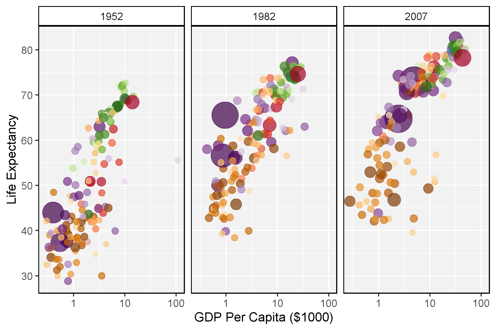
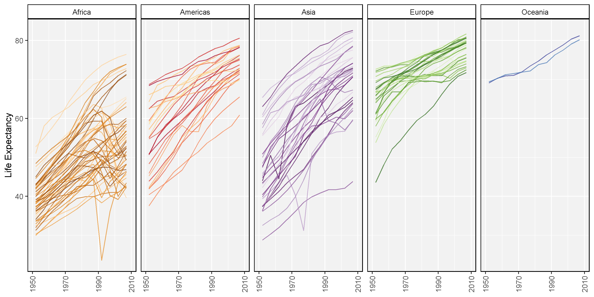
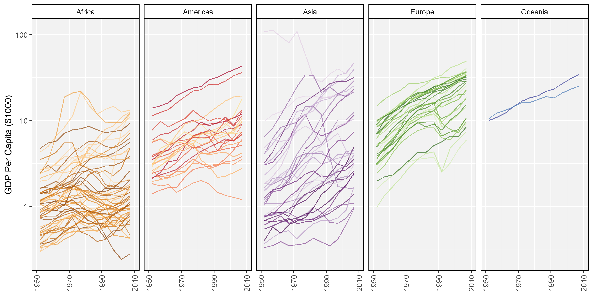

# devtools::install_github("derekmichaelwright/dblogr")
library(dblogr) # Loads: tidyverse, ggpubr, ggbeeswarm, ggrepel
library(gapminder)
library(gganimate)
Data
knitr::kable(gapminder %>% arrange(year) %>% slice(1:10))
| Afghanistan |
Asia |
1952 |
28.801 |
8425333 |
779.4453 |
| Albania |
Europe |
1952 |
55.230 |
1282697 |
1601.0561 |
| Algeria |
Africa |
1952 |
43.077 |
9279525 |
2449.0082 |
| Angola |
Africa |
1952 |
30.015 |
4232095 |
3520.6103 |
| Argentina |
Americas |
1952 |
62.485 |
17876956 |
5911.3151 |
| Australia |
Oceania |
1952 |
69.120 |
8691212 |
10039.5956 |
| Austria |
Europe |
1952 |
66.800 |
6927772 |
6137.0765 |
| Bahrain |
Asia |
1952 |
50.939 |
120447 |
9867.0848 |
| Bangladesh |
Asia |
1952 |
37.484 |
46886859 |
684.2442 |
| Belgium |
Europe |
1952 |
68.000 |
8730405 |
8343.1051 |
Plots
mp <- ggplot(gapminder %>% filter(year %in% c(1952, 1982, 2007)),
aes(gdpPercap / 1000, lifeExp, size = pop, colour = country)) +
geom_point(alpha = 0.7) +
scale_colour_manual(values = country_colors) +
scale_size(range = c(2, 12)) +
scale_x_log10() +
facet_wrap(. ~ year, ncol = 5) +
theme_dblogr(legend.position = "none") +
labs(x = "GDP Per Capita ($1000)", y = "Life Expectancy")
ggsave("gapminder_01.png", mp, width = 6, height = 4)

mp <- ggplot(gapminder, aes(x = year, y = lifeExp, colour = country)) +
geom_line(alpha = 0.7) +
scale_colour_manual(values = country_colors) +
scale_x_continuous(breaks = seq(1950, 2010, 20)) +
coord_cartesian(xlim = c(1950, 2010)) +
facet_wrap(. ~ continent, ncol = 5) +
theme_dblogr(legend.position = "none", rotx = T) +
labs(x = NULL, y = "Life Expectancy")
ggsave("gapminder_02.png", mp, width = 10, height = 5)

mp <- ggplot(gapminder, aes(x = year, y = gdpPercap / 1000, colour = country)) +
geom_line(alpha = 0.7) +
scale_colour_manual(values = country_colors) +
scale_x_continuous(breaks = seq(1950, 2010, 20)) +
scale_y_log10() +
coord_cartesian(xlim = c(1950, 2010)) +
facet_wrap(. ~ continent, ncol = 5) +
theme_dblogr(legend.position = "none", rotx = T) +
labs(x = NULL, y = "GDP Per Capita ($1000)")
ggsave("gapminder_03.png", mp, width = 10, height = 5)

Animations
# gganimate example
mp <- ggplot(gapminder, aes(x = gdpPercap / 1000, y = lifeExp, size = pop, colour = country)) +
geom_point(alpha = 0.7, show.legend = F) +
scale_colour_manual(values = country_colors) +
scale_size(range = c(2, 12)) +
scale_x_log10() +
facet_wrap(. ~ continent, ncol = 5) +
theme_dblogr() +
# Here comes the gganimate specific bits
labs(title = 'Year: {frame_time}', x = 'GDP Per Capita ($1000)', y = 'Life Expectancy') +
transition_time(year) +
ease_aes('linear')
anim_save("gapminder_gifs_01.gif", mp, width = 600, height = 400)

xx <- gapminder %>% arrange(rev(year), gdpPercap) %>%
mutate(country = factor(country, levels = unique(country)))
#
mp <- ggplot(xx, aes(x = country, y = gdpPercap / 1000, size = pop, colour = country)) +
geom_point(alpha = 0.7, show.legend = F) +
scale_colour_manual(values = country_colors) +
scale_size(range = c(2, 12)) +
scale_y_log10() +
theme_dblogr(axis.text.x = element_blank(),
axis.ticks.x = element_blank()) +
# Here comes the gganimate specific bits
labs(title = 'Year: {frame_time}', x = NULL, y = 'GDP Per Capita ($1000)') +
transition_time(year) +
ease_aes('linear')
anim_save("gapminder_gifs_02.gif", mp, width = 600, height = 400)

xx <- gapminder %>% arrange(rev(year), lifeExp) %>%
mutate(country = factor(country, levels = unique(country)))
#
mp <- ggplot(xx, aes(x = country, y = lifeExp, size = pop, colour = country)) +
geom_point(alpha = 0.7, show.legend = F) +
scale_colour_manual(values = country_colors) +
scale_size(range = c(2, 12)) +
scale_y_log10() +
theme_dblogr(axis.text.x = element_blank(),
axis.ticks.x = element_blank()) +
# Here comes the gganimate specific bits
labs(title = 'Year: {frame_time}', x = NULL, y = 'Life Expectancy') +
transition_time(year) +
ease_aes('linear')
anim_save("gapminder_gifs_03.gif", mp, width = 600, height = 400)

gg_gapminder1 <- function(x) {
ggplot(x, aes(x = gdpPercap / 1000, y = lifeExp, size = pop, colour = country)) +
geom_point(alpha = 0.7) +
geom_text(aes(label = country), alpha = 0.7) +
scale_colour_manual(values = country_colors) +
scale_size(range = c(2, 12)) +
scale_x_log10() +
theme_dblogr(legend.position = "none") +
labs(title = "Year: {frame_time}", y = "Life Expectancy",
x = "GDP Per Capita ($1000)") +
transition_time(year) +
ease_aes('linear')
}
mp <- gg_gapminder1(gapminder)
anim_save("gapminder_gifs_04.gif", mp, width = 600, height = 400)

Regions
mp <- gg_gapminder1(gapminder %>% filter(continent == "Africa"))
anim_save("gapminder_gifs_05.gif", mp, width = 600, height = 400)

mp <- gg_gapminder1(gapminder %>% filter(continent == "Americas"))
anim_save("gapminder_gifs_06.gif", mp)

mp <- gg_gapminder1(gapminder %>% filter(continent == "Asia"))
anim_save("gapminder_gifs_07.gif", mp, width = 600, height = 400)

mp <- gg_gapminder1(gapminder %>% filter(continent == "Europe"))
anim_save("gapminder_gifs_08.gif", mp, width = 600, height = 400)

Countries
gg_gapminder2 <- function(mycountries) {
x <- gapminder %>% filter(country %in% mycountries)
ggplot(x, aes(x = gdpPercap / 1000, y = lifeExp, colour = country)) +
geom_point(size = 3) +
geom_line(alpha = 0.7) +
scale_colour_manual(values = country_colors) +
scale_x_log10() +
theme_dblogr(legend.position = "bottom") +
labs(title = "Year: {frame_along}", y = "Life Expectancy",
x = "GDP Per Capita ($1000)") +
transition_reveal(year)
}
mp <- gg_gapminder2("Canada")
anim_save("gapminder_gifs_09.gif", mp, width = 600, height = 400)

mp <- gg_gapminder2("China")
anim_save("gapminder_gifs_10.gif", mp, width = 600, height = 400)

mp <- gg_gapminder2(c("Rwanda", "South Africa", "Nigeria"))
anim_save("gapminder_gifs_11.gif", mp, width = 600, height = 400)